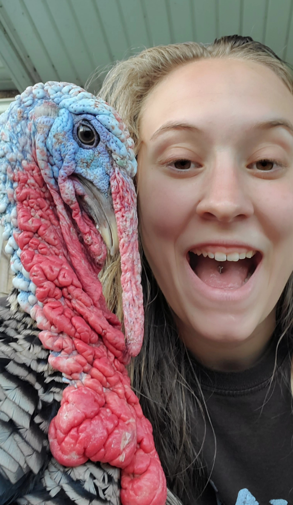
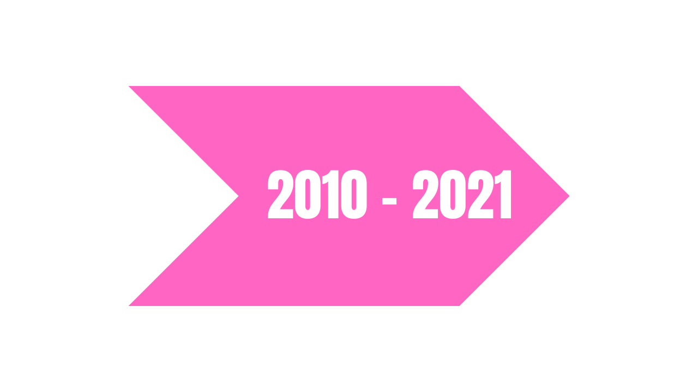
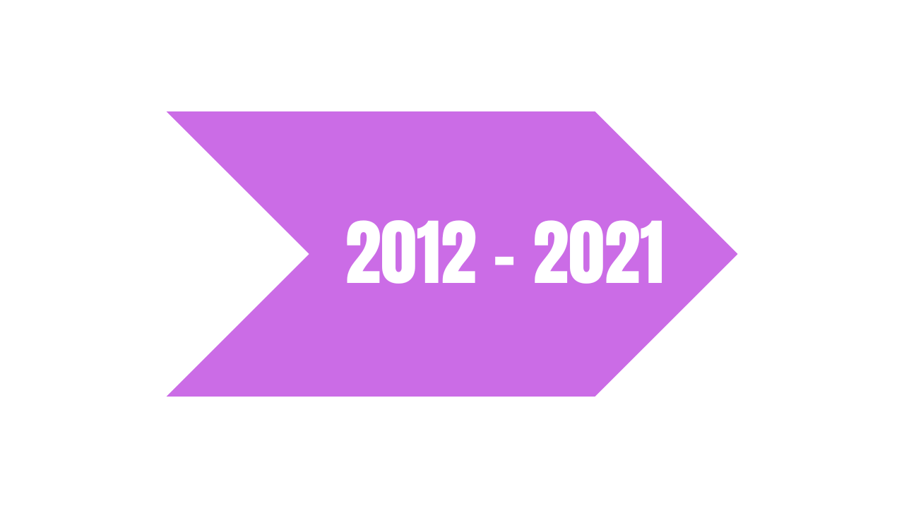
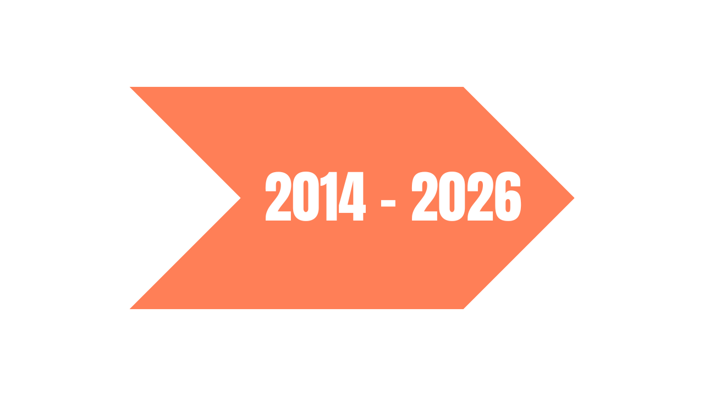
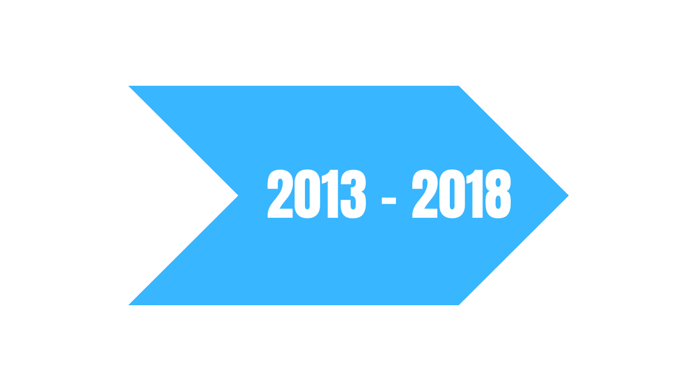
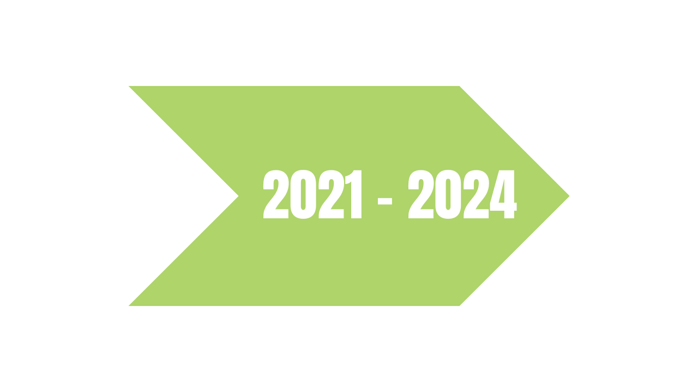

Head Back To The Homepage!

View My CookSync Project!

View My Taniti Project!

View My Vibrational Earth Project!



I'm Jessica Parrish — a UX/UI designer based in Ohio. When I'm not
designing, you'll usually find me working on creative projects, spending time outdoors,
or hanging out with my pet turkeys! Currently, I'm building my portfolio and finding my
footing in the design & tech world, and expanding my skills. While my primary focus is
creating intuitive, user-centered experiences, I also enjoy building the solutions I
design through web development, mobile applications, and hardware-based projects.
My path into tech hasn't been traditional, but it's shaped the way I approach problem-solving.
I started volunteering on my local fire department at 17. By 19 I was a certified Level 2
firefighter and an EMT Basic, working part time and showing up for people in some of the worst
moments of their lives. It taught me how to stay calm under pressure, pay attention to details
that matter, take responsibility seriously and put people first.
For over a decade I also ran my own small driving arrangement, transporting Amish women to
work in the Cleveland Heights area — a role that was built entirely on trust, consistency,
and reliability. It was difficult to move on from that role because they relied on me & we had
spent a decade working together but I knew it was time for me to get into the tech world & make
a bigger impact in the world.
In 2021 I started studying software development at WGU, switching
to software engineering in 2023 when the program launched. My coursework has provided a
strong foundation in software design, development principles, databases, web technologies,
and application architecture.
While earning my degree, I've focused on learning through hands-on experience. I've designed
user interfaces, built web applications, developed Android apps, and created hardware projects
involving microcontrollers and embedded systems. Each project has helped me strengthen both my
technical and problem-solving skills.
Although I haven't held a professional role in the tech industry yet, I'm passionate about
continuously learning and creating. I enjoy turning ideas into real, working solutions and
am always looking for new opportunities to grow as a designer, developer, and engineer.

Communication Skills

Leadership and Teamwork

Trust, Consistency, and Reliability

Associate Degree of Science & an Associate Degree of Arts

Bachelor's Degree in Software Engineering
I'm always open to new opportunities and collaborations. Feel free to reach out!